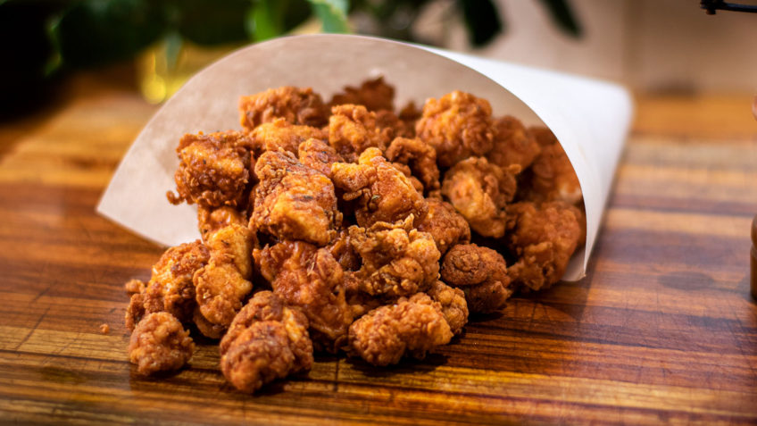

Popcon Chicken

Description
Popcorn chicken is a dish of bite-sized chunks of deep-fried chicken that are sure to be a family favorite. I love to serve the chicken with mashed potatoes and green beans.
Ingredients
- 3 cups flour
- 2 teaspoons garlic powder
- ½ teaspoon salt
- ¼ teaspoon ground black pepper
- 2 eggs
- 2 tablespoons lemon juice
- oil for frying
- 3 skinless, boneless chicken breasts, cubed
Steps
- Mix flour, garlic powder, salt, and black pepper together in a bowl. Beat eggs and lemon juice together in a separate bowl.
- Heat 2 inches of oil in a large pot over medium heat.
- Dredge chicken pieces in flour mixture; shake off excess. Dip into beaten egg. Lift up so excess egg drips back into the bowl. Press into flour mixture again to coat.
- Lower pieces of chicken carefully into hot oil in batches; fry until golden brown, 7 to 8 minutes. Transfer to a paper towel-lined plate to drain. Repeat with remaining chicken pieces.